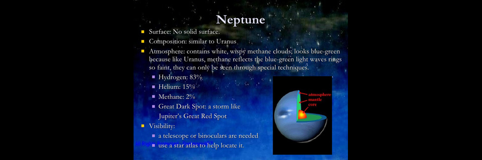

Neptune

- 
Neptune
Neptune is the eighth and farthest known planet from the Sun in the Solar System. It is the fourth-largest planet by diameter and the third-largest by mass. Among the giant planets in the Solar System, Neptune is the most dense. Neptune is 17 times the mass of Earth and is slightly more massive than its near-twin Uranus, which is 15 times the mass of Earth and slightly larger than Neptune.[c] Neptune orbits the Sun once every 164.8 years at an average distance of 30.1 astronomical units (4.50×109 km). Named after the Roman god of the sea, its astronomical symbol is ♆, a stylised version of the god Neptune's trident.
Neptune is not visible to the unaided eye and is the only planet in the Solar System found by mathematical prediction rather than by empirical observation. Unexpected changes in the orbit of Uranus led Alexis Bouvard to deduce that its orbit was subject to gravitational perturbation by an unknown planet. Neptune was subsequently observed with a telescope on 23 September 1846[1] by Johann Galle within a degree of the position predicted by Urbain Le Verrier. Its largest moon, Triton, was discovered shortly thereafter, though none of the planet's remaining known 14 moons were located telescopically until the 20th century. The planet's distance from Earth gives it a very small apparent size, making it challenging to study with Earth-based telescopes. Neptune was visited by Voyager 2, when it flew by the planet on 25 August 1989.[10] The advent of the Hubble Space Telescope and large ground-based telescopes with adaptive optics has recently allowed for additional detailed observations from afar.
Neptune is similar in composition to Uranus, and both have compositions that differ from those of the larger gas giants, Jupiter and Saturn. Like Jupiter and Saturn, Neptune's atmosphere is composed primarily of hydrogen and helium, along with traces of hydrocarbons and possibly nitrogen, but contains a higher proportion of "ices" such as water, ammonia, and methane. However, its interior, like that of Uranus, is primarily composed of ices and rock,[11] and hence Uranus and Neptune are normally considered "ice giants" to emphasise this distinction.[12] Traces of methane in the outermost regions in part account for the planet's blue appearance.[13]
In contrast to the hazy, relatively featureless atmosphere of Uranus, Neptune's atmosphere has active and visible weather patterns. For example, at the time of the Voyager 2 flyby in 1989, the planet's southern hemisphere had a Great Dark Spot comparable to the Great Red Spot on Jupiter. These weather patterns are driven by the strongest sustained winds of any planet in the Solar System, with recorded wind speeds as high as 2,100 kilometres per hour (580 m/s; 1,300 mph).[14] Because of its great distance from the Sun, Neptune's outer atmosphere is one of the coldest places in the Solar System, with temperatures at its cloud tops approaching 55 K (−218 °C). Temperatures at the planet's centre are approximately 5,400 K (5,100 °C).[15][16] Neptune has a faint and fragmented ring system (labelled "arcs"), which was first detected during the 1960s and confirmed by Voyager 2.